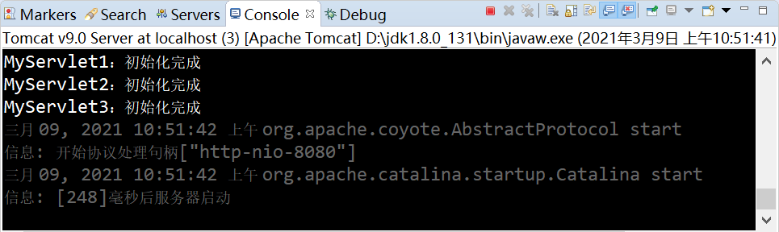
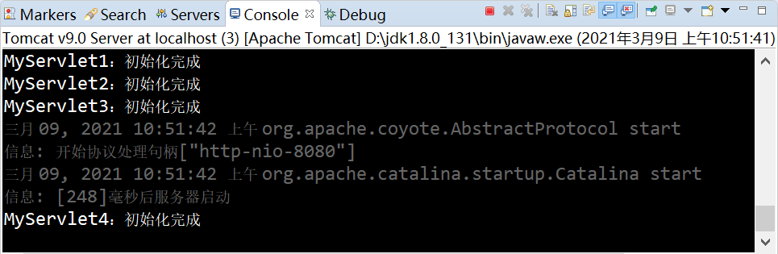
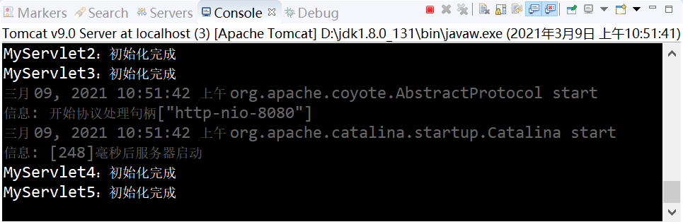

load-on-startup元素：控制Servlet启动优先级
load-on-startup 是 web.xml 中的一个节点，是 servlet 元素的子元素，用来标记 Servlet 容器启动时是否初始化当前 Servlet，以及当前 Servlet 的初始化顺序。
load-on-startup 元素取值规则如下：
在 servletDemo 项目的 net.biancheng.www 包中，创建名称为 MyServlet1 的类，代码如下。
web.xml 的配置如下。
在地址栏输入“http://localhost:8080/servletDemo/MyServlet1”，访问 MyServlet1，结果如下图。
在地址栏输入“http://localhost:8080/servletDemo/MyServlet2”，访问 MyServlet2，结果如下图。
在地址栏输入“http://localhost:8080/servletDemo/MyServlet3”，访问 MyServlet3，结果如下图。
在地址栏输入“http://localhost:8080/servletDemo/MyServlet4”，访问 MyServlet4，结果如下图。
在地址栏输入“http://localhost:8080/servletDemo/MyServlet5”，访问 MyServlet5，结果如下图。
由示例可知：
load-on-startup 元素取值规则如下：
- 它的取值必须是一个整数；
- 当值小于 0 或者没有指定时，则表示容器在该 Servlet 被首次请求时才会被加载；
- 当值大于 0 或等于 0 时，表示容器在启动时就加载并初始化该 Servlet，取值越小，优先级越高；
- 当取值相同时，容器就会自行选择顺序进行加载。
@WebServlet 注解的 loadOnStartup 属性与 web.xml 中的 load-on-startup 元素相对应，取值的规则和含义相同。
示例
下面通过一个案例进行演示。在 servletDemo 项目的 net.biancheng.www 包中，创建名称为 MyServlet1 的类，代码如下。
package net.biancheng.www;
import java.io.IOException;
import javax.servlet.ServletException;
import javax.servlet.http.HttpServlet;
import javax.servlet.http.HttpServletRequest;
import javax.servlet.http.HttpServletResponse;
public class MyServlet1 extends HttpServlet {
@Override
protected void doGet(HttpServletRequest req, HttpServletResponse resp) throws ServletException, IOException {
}
@Override
protected void doPost(HttpServletRequest req, HttpServletResponse resp) throws ServletException, IOException {
doGet(req, resp);
}
@Override
public void destroy() {
System.out.println(this.getServletName() + "：销毁");
}
@Override
public void init() throws ServletException {
System.out.println(this.getServletName() + "：初始化完成");
}
}
web.xml 的配置如下。
<?xml version="1.0" encoding="UTF-8"?>
<web-app xmlns:xsi="http://www.w3.org/2001/XMLSchema-instance"
xmlns="http://xmlns.jcp.org/xml/ns/javaee"
xsi:schemaLocation="http://xmlns.jcp.org/xml/ns/javaee http://xmlns.jcp.org/xml/ns/javaee/web-app_4_0.xsd"
id="WebApp_ID" metadata-complete="false" version="4.0">
<servlet>
<servlet-name>MyServlet1</servlet-name>
<servlet-class>net.biancheng.www.MyServlet1</servlet-class>
<!-- load-on-startup 取值0 -->
<load-on-startup>0</load-on-startup>
</servlet>
<servlet>
<servlet-name>MyServlet2</servlet-name>
<servlet-class>net.biancheng.www.MyServlet1</servlet-class>
<!-- load-on-startup 取值1 -->
<load-on-startup>1</load-on-startup>
</servlet>
<servlet>
<servlet-name>MyServlet3</servlet-name>
<servlet-class>net.biancheng.www.MyServlet1</servlet-class>
<!-- load-on-startup 取值2 -->
<load-on-startup>2</load-on-startup>
</servlet>
<servlet>
<servlet-name>MyServlet4</servlet-name>
<servlet-class>net.biancheng.www.MyServlet1</servlet-class>
<!-- load-on-startup 取值-1-->
<load-on-startup>-1</load-on-startup>
</servlet>
<!--不设置 load-on-startup ，去默认值 -->
<servlet>
<servlet-name>MyServlet5</servlet-name>
<servlet-class>net.biancheng.www.MyServlet1</servlet-class>
</servlet>
<servlet-mapping>
<servlet-name>MyServlet1</servlet-name>
<url-pattern>/MyServlet1</url-pattern>
</servlet-mapping>
<servlet-mapping>
<servlet-name>MyServlet2</servlet-name>
<url-pattern>/MyServlet2</url-pattern>
</servlet-mapping>
<servlet-mapping>
<servlet-name>MyServlet3</servlet-name>
<url-pattern>/MyServlet3</url-pattern>
</servlet-mapping>
<servlet-mapping>
<servlet-name>MyServlet4</servlet-name>
<url-pattern>/MyServlet4</url-pattern>
</servlet-mapping>
<servlet-mapping>
<servlet-name>MyServlet5</servlet-name>
<url-pattern>/MyServlet5</url-pattern>
</servlet-mapping>
</web-app>
启动 Tomcat 服务器，控制台输出如下图所示。

在地址栏输入“http://localhost:8080/servletDemo/MyServlet1”，访问 MyServlet1，结果如下图。
在地址栏输入“http://localhost:8080/servletDemo/MyServlet2”，访问 MyServlet2，结果如下图。
在地址栏输入“http://localhost:8080/servletDemo/MyServlet3”，访问 MyServlet3，结果如下图。
在地址栏输入“http://localhost:8080/servletDemo/MyServlet4”，访问 MyServlet4，结果如下图。

在地址栏输入“http://localhost:8080/servletDemo/MyServlet5”，访问 MyServlet5，结果如下图。

由示例可知：
- 由于 MyServlet1、MyServlet2 和 MyServlet3 的 load-on-startup 元素取值都大于等于 0，因此当 Tomcat 启动时，就对它们进行了初始化。
- 由于在 Servlet 的生命周期内，init() 方法（初始化方法）只能被调用一次，因此当 Tomcat 启动完成后，第一次访问 MyServlet1、MyServlet2 和 MyServlet3 时，它们不会再次被初始化。
- 由于 MyServlet4 的 load-on-startup 元素取值为负数，因此只有当第一次请求它时，才会进行初始化。
- 由于 MyServlet5 没有指定 load-on-startup 元素取值，因此只有当第一次请求它时，才会进行初始化。
关注公众号「站长严长生」，在手机上阅读所有教程，随时随地都能学习。内含一款搜索神器，免费下载全网书籍和视频。

微信扫码关注公众号